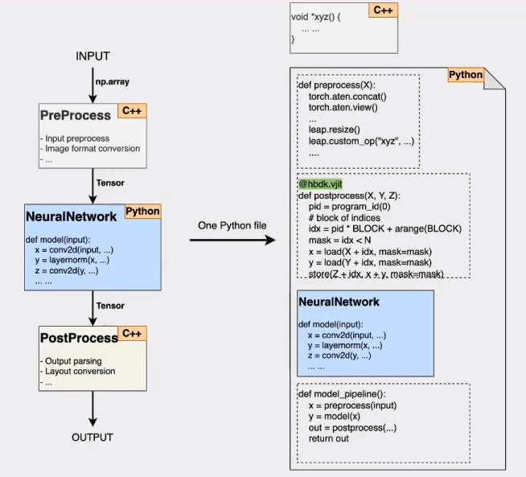

neural chip
コンパイラ最適化
Layer Group
1から4、5から8、8から12のように分けることができます。
しかし、ここで重要なのは、これは実際には組み合わせの問題であるという点です。
つまり、多くの異なる分け方が可能です。
極端な例では、1から12をすべて1つのグループにする方法、または1から12を12個のグループに分け、各層を1つのグループにする方法があります。
もともとGPU上で一般的に行われていた方法は、各層を1つのグループに分ける方法でした。
これは、各層を計算した後にDDRにStoreします。それを統合して次の層の計算を行うというプロセスに基づいています。
その後、グループ化が終わったら、次のステップとしてPruning操作を行います。
この操作を通じて、効果が良くないことがわかった場合には、その部分を削除します。
次に、Layer Groupを単位として指令の再配置（TilingやSchedule、Sherlockの割り当てなど）を行います。指令の再配置について後ほど説明します。
これらの操作がすべて完了した後、正常にプロセスが進む場合、それは「コンパイル可能」であることを意味します。
しかし、グループ化の段階で必要なメモリサイズ(SRAMの容量よりはるか大きい)が大きすぎる場合、コンパイルできないことがあります。
そのため、CoreGenerator/Performance estimationを用いて予測を行うことで、最も処理時間が短いとなる効率的なグループ化を選定します。
Tiling
CodeGenの過程では：Tiling方向、Tiling回数、keep in SRAM
Tilingのプロセスを制御する際には、反復計算の方向や回数、中間出力の結果をさらに計算に持ち込むかどうかといった、実行時に意思決定が必要な戦略を考慮する必要があります。
これらの問題を解決するために、動的計画法（Dynamic Programming）を用いる方法を採用しています。
動的計画法を使って、最適なNLPのレイヤー分割を探索します。
ただし、計算が爆発的に増加しないように、最大のレイヤー数を制限しています。
例えば、最大50層までに制限するとします。この50層というのが、現実的に許容可能な上限になります。
具体例として、100層のモデルがあると仮定します。
もし完全探索を行うと、非常に多くの試行回数が必要になりますが、
EP（例えばEvolutionary Programming）などの手法を使うことで、試行回数を約5000回程度に減らせます。
さらに、各グループ内で最大のOP数を制限すれば、試行回数をさらに減少させることも可能です。
しかし、これらの試行には、Tiling（タイル分割）、Schedule（スケジュール）、オーバーヘッドの削減といった部分は含まれていません。
そのため、さらに極端な簡略化や最適化を行い、明らかに利益を生まない部分を削除する作業が必要です。
たとえば、Layer Groupを切り替える場合、Proof、Style、その他の要素を1つのグループにまとめたと仮定します。
このとき、どのようにTilingを行うべきでしょうか？Tilingを行うことによって得られる利点は何でしょうか？
このような問いは、多くの研究者や開発者が直面している課題であり、さまざまな場面で議論されています。
Scheduling
Schedulingの過程では、演算容量の状況を考慮する必要があります。
例えば、この場所で使用するクライアントソフトウェアがある場合、そのスケジュールがこの場所に割り当てられると、入力と出力の演算容量が収まらない可能性があります。
その場合、仕方なく後回しにする必要がある場合もあります。
したがって、スケジューリング時には演算容量の配分を考慮する必要があります。
当初、動的計画法DPを用いて、演算容量の配分は非常に簡単だと思われていました。例えば、等分する方法で調整する場合、各Tileのサイズを均一にすればよいと考えられていました。
しかし、現在ではモデルがますます複雑になり、このような状況が多様化しています。タイルのサイズもさまざまで、それに伴う状況も複雑になっています。
時には、適切に分割できないことで、ある場所には収まるが、別の場所には収まらないといった事態が発生します。その結果、演算容量の配分アルゴリズムの複雑さが大幅に増大しているのが現状です。
コンパイラモデル
LEAP(DSL for Efficient AI Programming)
例として、Input → ProPrcess → NeuralNetwork → PostProcess → Output
- Torch Core :
- DSL:
- Triton:
- C/C++:
1 | # example input |
